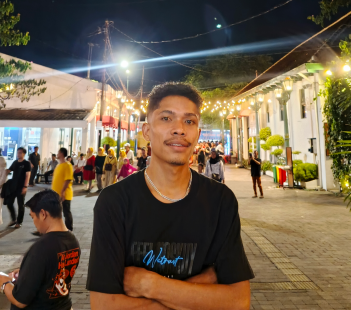

Tentang Saya

Foto Profil
Data Pribadi
Nama: Irens Fidelis Wuarlela
NIM: 245410051
Email: irens.fidelis24@students.utdi.ac.id
Program Studi: Informatika
Universitas: Universitas Teknologi Digital Indonesia
Tentang Saya
Saya adalah mahasiswa semester 5 yang sedang menempuh pendidikan di bidang teknologi informasi. Saya tertarik mempelajari pemrograman, pengembangan web, dan hal-hal berkaitan dengan teknologi digital.
Saat ini sedang belajar membuat halaman web menggunakan HTML dan CSS. Tujuan saya adalah mampu membuat tampilan website yang rapi, menarik, dan mudah digunakan.
Keahlian
- Dasar Bahasa Pemrograman C & Python
- HTML & CSS — sedang dipelajari
- Git & GitHub untuk pengelolaan kode
- Desain antarmuka sederhana